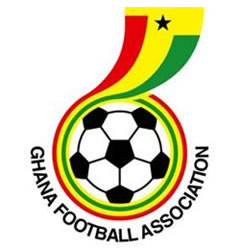

por Pedro Henrique B. N. Prado

Só há três países que podem se orgulhar de ter títulos mundiais sub-17 e sub-20 no currículo. Um é o Brasil. Outro é a já finada União Soviética. E o terceiro é Gana, que levou a última edição do sub-20 e que já tem dois campeonatos sub-17. À primeira vista, pode-se atribuir o sucesso graças apenas aos jogadores com idade adulterada (mas olhemos para o nosso próprio umbigo e lembremos também dos casos brasileiros). Fato é que há muitos anos Gana desenvolve um trabalho que começa lá no chão de terra, com crianças de todo o país, e que hoje resulta em uma seleção principal de respeito, que chega forte como nunca a uma Copa do Mundo.
Se você acompanha o futebol europeu, já conhece Essien, volante do Chelsea, no auge da forma física e técnica. Talvez também saiba quem são os meias Appiah, no Bologna, e Muntari, do Internazionale. E o que eles têm em comum, além de titulares da seleção principal, é a longa experiência com a camisa ganesa. Os três já disputaram o Mundial Sub-20, Essien e Appiah estiveram também no Sub-17. E isso não é apenas coincidência.
Consciente da dificuldade dos clubes de Gana para revelar jogadores, a federação espalhou escolinhas de futebol por todo o país. De lá, tira os meninos mais talentosos, que seguem com os professores e depois vão para os clubes locais. O trabalho continua com a formação de seleções praticamente permanentes nas categorias de base. Essien e Muntari, por exemplo, jogam juntos desde o Mundial Sub-20 de 2001.
A mesma base que eliminou o Brasil do Mundial Sub-17 de 2007 também foi a que conquistou o Sub-20 deste ano, sobre o Brasil. Gana foi campeã e teve o artilheiro e Bola de Ouro Dominic Adiyiah. Destacaram-se também o goleiro Agyei, o lateral Inkoom, os meias Agyemang-Badu e Ayew e o atacante Osei. E, adivinhe, todos já foram incorporados à seleção principal.
Vários deles devem ir à Copa, mas quase todos ficarão no banco. A geração anterior, capitaneada por Essien, ainda tem bola pra jogar. Mostrou isso na Copa de 2006, quando caiu nas oitavas de final para o Brasil. Neste ano, foi até a final da Copa Africana de Nações e caiu para o heptacampeão Egito, ficando com o vice. Ao que parece, pode fazer ainda melhor que 2006 em 2010. Para Gana, o futuro finalmente chegou.